| Tasks | ||
|---|---|---|
|
|
|
|
| Concepts | Advanced Topics | |
The R4E Navigator View is the main component of R4E. It shows all the information that is available to the user and it is also the place where most user commands are available. The Review Navigator information is organized in a hierarchical tree structure and is presented in a Navigator panel. Elements shown in red are read-only. Commands are available in the view toolbar and in context menus that appear when right-clicking the navigator elements.
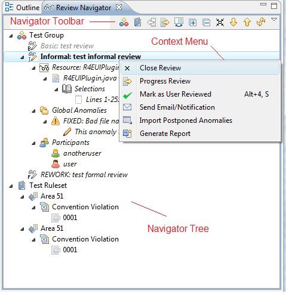
When a Review is open, the Navigator view can focus on and display the Review elements in an alternate display that show them in a more compact and table-like way. Both representations can be toggled on by using the Change Display toolbar command.
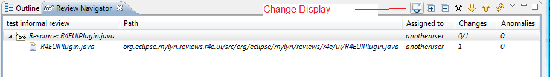
When Review Navigator elements are not relevant anymore (e.g. completed reviews), they can be removed from the view by using the ''Disable ''command from the element's context menu.
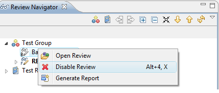
Disabled elements data is kept, but they will not appear in the navigator view anymore. Take note that currently it is not possible to completely remove references to an element once it is created.
To see disabled elements in the Navigator view, go to the R4E Preferences Filter Tab and select the
Show Disabled Elements checkbox and apply the preferences. The disabled elements will show in the Navigator grayed out and with the little disabled decorator icon

Ideally, disabled elements should never be shown, but there could be a need to restore mistakenly disabled elements. To do so, first go to the Eclipse preferences R4E page, on the Filters tab and enable the Show Disabled Elements filter, then return to the Navigator view and select the ''Restore ''command from the disabled element context menu

The Navigator elements can currently be sorted alphabetically or by review type, by selecting the appropriate sorter in the Review Navigator Toolbar menu.

The Navigator view provides different filters that can be used to limit the visibility of elements within the navigator tree. Filters are available in the Review Navigator Toolbar menu.

The filters available are:
To help Users to keep track of the content that was reviewed it is possible to mark relevant Review Navigator elements as reviewed using the context menu Mark/Unmark as User Reviewed command. This will put a little done decorator
 icon. The marking can be removed by using the same command to toggle the state.
icon. The marking can be removed by using the same command to toggle the state.
A due date can be set for the Review and Anomalies elements to specify a latest date after which the review (or anomaly) should be completed (i.e. set to a terminal state). After this date has passed, if the elements are still not completed, they will be highlighted in the Review Navigator, using icon decorators, red text and additional info in their respective tooltips, so that the review participants are aware of the situation and can take action quickly. Take note that does not apply to anomalies in basic reviews, since they are stateless.
These other commands are also available from the Navigator view toolbar and/or drop-down menu:
 : Change the state of a stateful element (e.g. Review, Anomaly) to its next logical state. This is a shortcut and can also be done through the R4E Properties view for the element.
: Change the state of a stateful element (e.g. Review, Anomaly) to its next logical state. This is a shortcut and can also be done through the R4E Properties view for the element.
 : Change the state of a stateful element (e.g. Review, Anomaly) to its previous logical state. This is a shortcut and can also be done through the R4E Properties view for the element. Take note that this is the only way to change the state of a
COMPLETED Review.
: Change the state of a stateful element (e.g. Review, Anomaly) to its previous logical state. This is a shortcut and can also be done through the R4E Properties view for the element. Take note that this is the only way to change the state of a
COMPLETED Review.
 : This is a special filter that will take the selected element of the Navigator and put it at the root of the Navigator tree. This is useful to focus on a particular element and its children.
: This is a special filter that will take the selected element of the Navigator and put it at the root of the Navigator tree. This is useful to focus on a particular element and its children.
 : Collapse the current Navigator tree.
: Collapse the current Navigator tree.
 : Expand the current Navigator tree to the lowest level.
: Expand the current Navigator tree to the lowest level.
 : Move the selection to the next (lower) element in the tree and opens it in an editor if possible (for File Contexts elements and children)
: Move the selection to the next (lower) element in the tree and opens it in an editor if possible (for File Contexts elements and children)
 : Move the selection to the previous (higher) element in the tree and opens it in an editor if possible (for File Contexts elements and children)
: Move the selection to the previous (higher) element in the tree and opens it in an editor if possible (for File Contexts elements and children)
 : Fetches data from disk and rebuilds the Navigator tree. This will also show new data that has been added by other users.
: Fetches data from disk and rebuilds the Navigator tree. This will also show new data that has been added by other users.
Take note that not all filters and toolbar commands are available on all Review Navigator representations.
When using R4E for the first time, the first thing to do is to create Review Groups that will hold the R4E review data. Typically, Review Groups include common settings that will be used for multiple reviews. For instance, one can create a Review Group for a design organization, for a given project or task etc.
A given Review Groups is created only once, typically by a "super-user" selected among people that are part of the group.
In order to create the Group, select the New Group icon in the Review Navigator Toolbar.

This opens the New Review Group dialog.

When you create a new Review Group, its references are automatically included in your workspace. To add other Review Group references, open the R4E Preference Group Tab (Window->Preferences->R4E, then switch to tab "Groups")

The Review is the main element of R4E. It is used to group together file that are to be reviewed. There are three type of reviews, Basic, Informal and Formal review (See concepts section for an explanation of the different types of reviews).
To create a new Review, right-click on the parent Review Group under which you want to create the review and select the New Review Command from the R4E Context Menu.

This opens the New Review dialog.
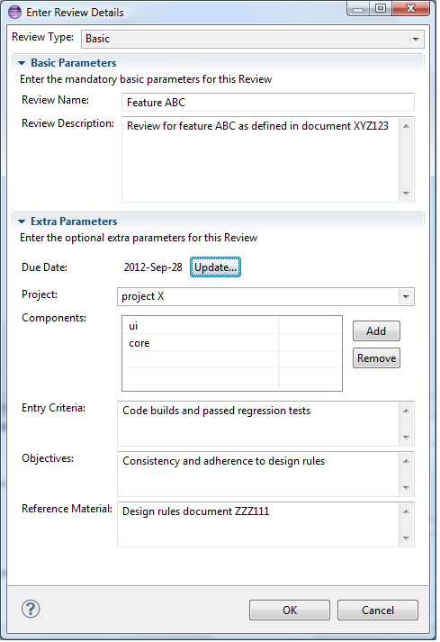
In order to be able to see the Review Group child Reviews, a Review Group must be open. Closed Review Group are shown with hollow Group icons. You can open a closed Review Group by right-clicking on it and selecting the Open Element command, or simply by double-clicking on it. Closing unused Review Groups make navigation easier and free up memory and resources, so the Groups should be closed when they are unused.
Likewise, reviews can also be open and closed using the same mechanism. The only difference is that only one review (called the Active Review) can be open at any given time. Opening another Review closes the currently open one.
Take note that Review Groups and Reviews are automatically open after they are first created.
Participants are automatically added to the current Review as soon as they add review items to it or create an anomaly. It is also possible to add them manually.
To do so, right click on the parent review and select the New Participants Command from the R4E Context Menu.
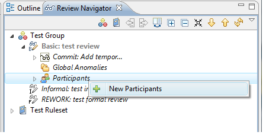
This opens the Enter Participants details dialog.
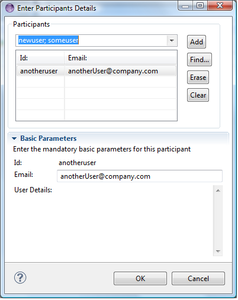
The dialog is divided into 2 sections:
If an LDAP database is configured and connected, the user information could be searched and filled-in automatically using the Find button, which will open the Find User Dialog

Any field can be entered in the Search Filters section and by clicking the Search button, an LDAP query will be sent to the database. If any matches are found, the results will be displayed in the Query Results section. Once the results are in, users can be added by double-clicking on them in the results table, or by selecting them and using the Add Users button. Pressing the OK button will result in the users being added to the New Participants dialog participant list.
In R4E, Review Items are a collection of one or more files, or parts of files, that are to be reviewed. There are two types of Review Items that exist: Commit Review Items and Resource Review Items.
This item type is created by manually selecting a workspace resource (i.e. File) or a portion of a resource (i.e. line ranges within a given file).
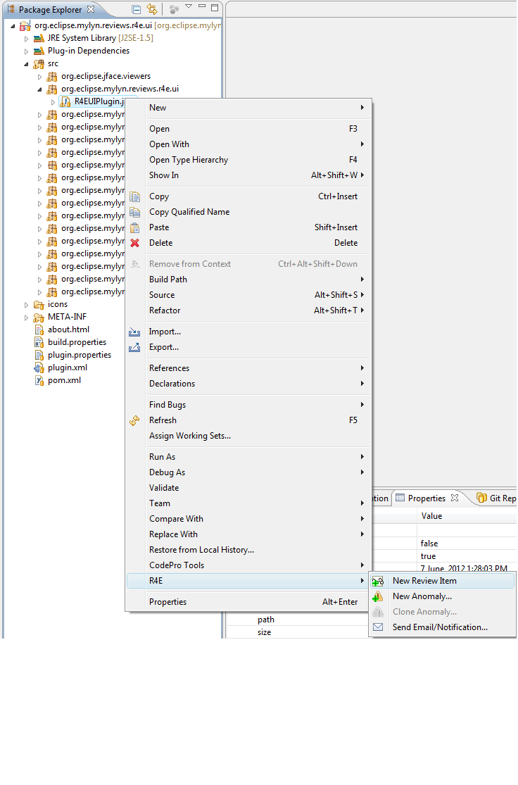

Once a Resource Review Item is created, it will be shown in the Review Navigator. If you expand the Review Item, you will see the child elements: The file on which the Review Item is applied and the line range selection that is part of the item.

This item type is created by selecting files that were committed to a Version Control System repository. Currently, the only Version Control System supported is Git.
To create a Commit Review Item, right click on a project attached to the Egit team provider (see Project Configuration) and select the Find Review Items command from the R4E Context menu.
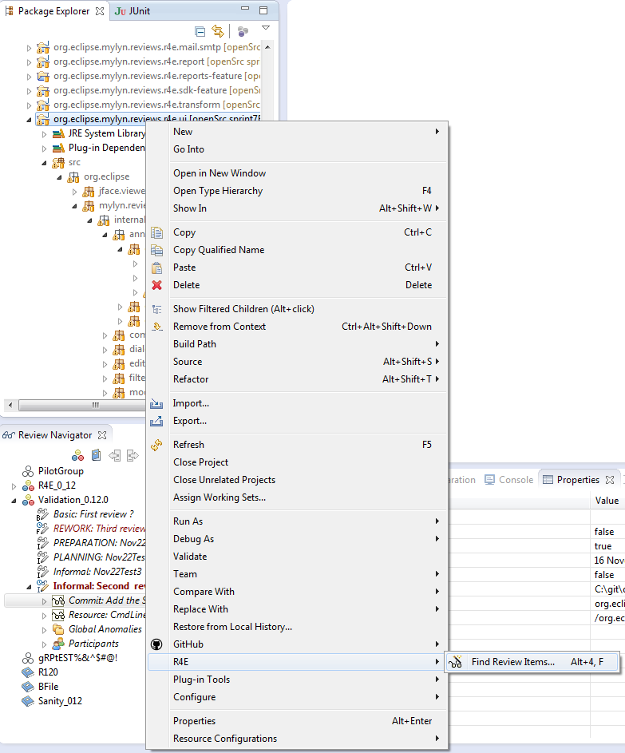
This will show the Version Control System Commit Dialog (Here shown for the Git connector).

Use the Available Commits combo box to browse through all available commits and select one. For the selected commit, the commit information and affected files appear in the Commit Information and Committed Components sections respectively.
Once a Commit Review Item is created, it will be shown in the Review Navigator. If you expand the Review Item, you will see the child elements: The file on which the Review Item is applied and, optionally if the option is selected in the preferences, the line ranges for the Deltas (or differences between the committed file and its direct ancestor) that are part of the Item.

The icons for the files that are new and were added in the commit will be shown decorated with a little
 icon The icons for the files that were removed in the commit will be shown decorated with a little
icon The icons for the files that were removed in the commit will be shown decorated with a little
 icon Files in the commit that are out of sync i.e. for which the version to review and the version present in the users workspace differ will be shown with the > sign prepended to the filename. Such files can be reviewed, but to use the full navigatability provided by the editors, it is strongly recommended that the files be in sync with the workspace whenever possible.
icon Files in the commit that are out of sync i.e. for which the version to review and the version present in the users workspace differ will be shown with the > sign prepended to the filename. Such files can be reviewed, but to use the full navigatability provided by the editors, it is strongly recommended that the files be in sync with the workspace whenever possible.
When two Review Items have the same first line description, their displayed name in the Review Navigator will include a version number just after the Review Item type (e.g. Commit 1:... and Commit 2:..., where ... are two identical strings). This will show the users that the two Review Items are two different versions of the same code change. Of course, the first line of the Review Item description must not be changed for this function to work.
Is is possible to compare two arbitrary Review Items that are included in the same Review. Typically this will be used to see the differences between two versions of a given code change.
In order to do this, select two Review Items in the Review Navigator (using Ctrl-Left click or Shift-Left click) and then right click on one of the items and select the "Compare Review Items" command from the context menu
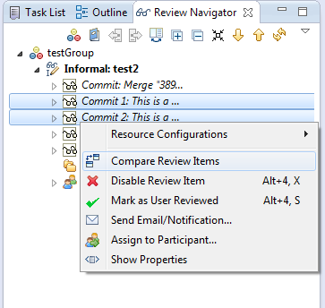
This will open a Structural Compare Editor that will show the files versions that are different. The file that belong to the most recently committed Review Item will always be the target files (on the left side) and the files belonging to the oldest Review Item will be the base files (on the right side).
Little + decorators show the files that were added in the newest Review Item, whereas - decorators show removed files.
To see the differences within a specific file, just double click on it and the lower side of the compare editor will be populated with the content differences between the files. From the Compare Editor, it is also possible to modify the R4E annotation markers (see R4E Annotations), on either side.
For instance, one could verify that anomalies that were written on a previous version of the code change are indeed corrected and change the state of the anomalies on the base version (right side) accordingly, as shown below.
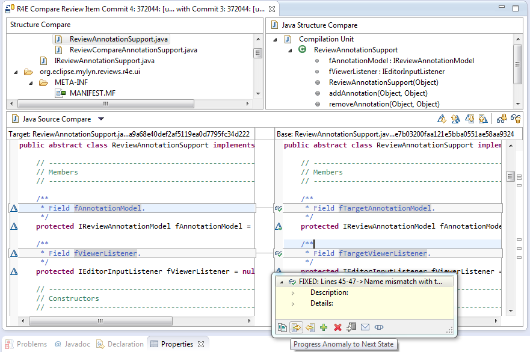
It is possible to assign specific review elements (i.e. Review Items, File Contexts, Selections and Deltas) to specific participants. To do so, use the context command Assign to Participant for the desired elements.
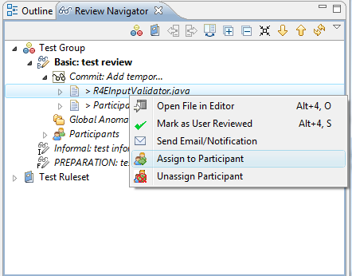
To remove an assignment, use the context command Unassign Participant.
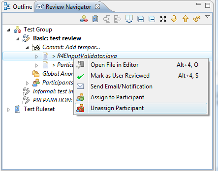
Take note that if a parent is assigned to given participants, then all its children will also be assigned. It is possible to override the parent's values and to change the children's assignments by operating on the child element directly.
Assignments can also be managed by using the Properties view for the selected element.
R4E Anomalies are raised by reviewers to flag problems or add comments on specific parts of the contents as part of the review process.
Anomalies are added in a similar way Resource Review Items are, either from a selected Resource or from a portion/range of a resource, by selecting the Add Anomaly command from the R4E context menu.
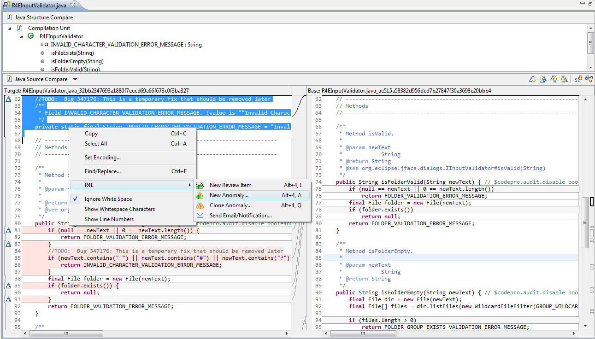
Anomalies that are directly tied to a specific selection/delta range can also be created by selecting the Add Linked Anomaly command from the context menu of the affected selection/delta in the Review Navigation View

Anomalies can also be created at the review level. This is useful to flag problems that are not specifically tied to a given file or file part. To do this, use the Add Anomaly Command from the context menu of the Global Anomalies element in the Review Navigator view.
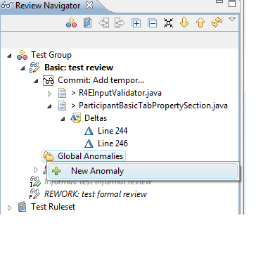
This opens the New Anomaly dialog.

Anomalies can be duplicated so that their information is applied to a new location and/or file. Anomalies are cloned be selecting a new range in an editor and using the Clone Anomaly contextual command
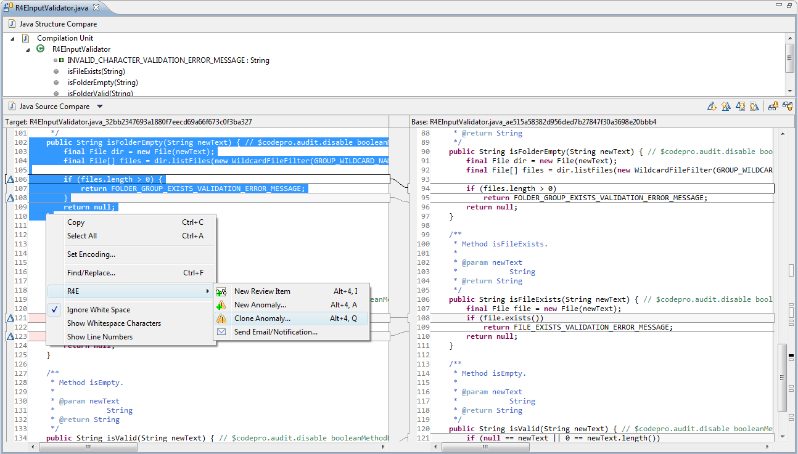
This will trigger the Clone Anomaly Dialog, where the source anomaly to clone can be selected.
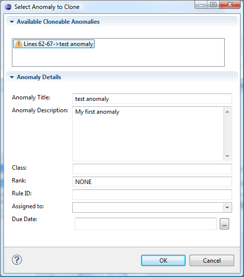
Once this is done, a new Anomaly will appear at the new location with the same information as the source one.
Anomalies can also be cloned to a specific Delta or Selection element by dragging and dropping them over the desired Delta or Selection, by using the Copy and Paste Review Navigator Contextual commands or by using the generic Copy (CTRL+C) and Paste (CTRL+V) hotkeys.
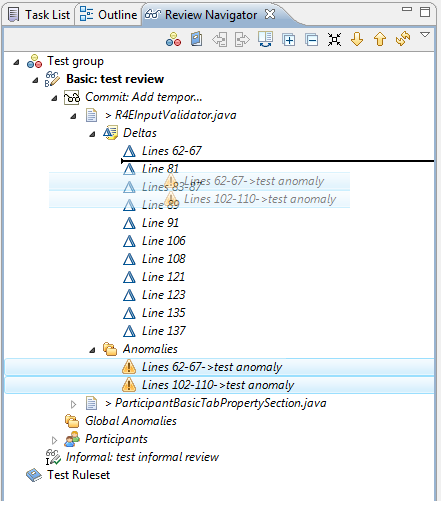
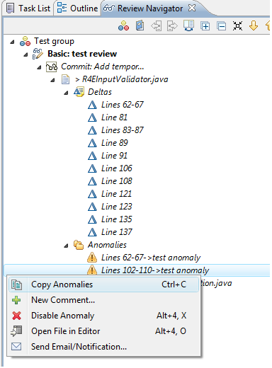

Take note that the child comments on the source anomaly are not copied to the new cloned anomaly. It is however possible to copy the comments manually (see below).
It is possible to add comments to an existing anomaly. This could be useful in discussing the anomaly or for tracking purposes. To create a Comment, use the Add Comment command on the context menu on the selected Anomaly.

This opens the New Comment dialog, where the comment can be added.

As for anomalies, it is also possible to copy comment information to another anomaly. It is done in a similar way than for cloning anomalies, by dragging and dropping the source comment(s) unto the target anomaly, by using the Copy and Paste Review Navigator contextual commands or by using the generic Copy (CTRL+C) and Paste (CTRL+V) hotkeys
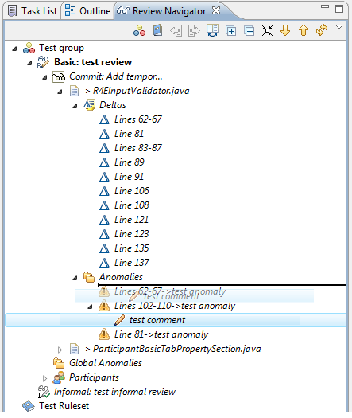


Postponed Anomalies are Anomalies that were written in previous Informal/Formal Reviews, but were not handled then and were instead set to POSTPONED state. If the current Review include files on which these anomalies were written, whether it is the same or a different version of a file, it is possible to import them in the current review so that they can be addressed. Currently, only Postponed Anomalies that belong to Reviews under the same Review Group can be imported. Global Anomalies that were written in other Reviews in the same Review Group can also optionally be imported.
To import Postponed Anomalies, just select the current Review in the Navigator View and use the context menu:
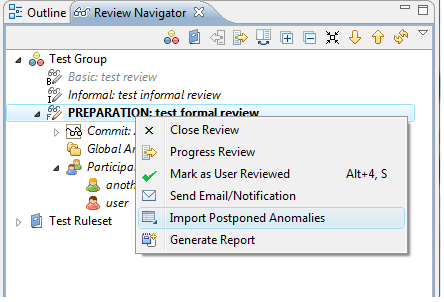
R4E will scan all Reviews under the current Review Group and will copy all Anomalies in POSTPONED state that were written on files also included in the current Review, and also Global Anomalies in POSTPONED state written in other Reviews, if the option is selected in the preferences. Once the command is done, the imported elements will appear on their own container elements under the Review element in the Review Navigator tree.
From then on, Postponed anomalies will behave like any other Anomaly and can be handled in the same way. All changes except the state changes will be local to the imported anomaly i.e. changing the imported anomaly will not change the original one. When a Postponed Anomaly is modified, the state changes will also be reflected in the original Anomaly (i.e. the one filed in the previous Review). For instance if the imported anomaly is fixed, the original one will be marked as fixed to convey the fact that the postponed issue is now closed.
Take note that Postponed Anomalies that have their state changed from POSTPONED will be disabled. If they are set back to Postponed, they will be restored as Postponed elements.
Postponed Anomalies will not be imported/refreshed from Reviews that have non-compatible metadata (Prefixed by the Unknown Tag). Likewise, it is not possible to alter a Postponed Anomaly if its original Review have non-compatible metadata without first upgrading it to the current metadata version (See Version Compatibility for more details on version compatibility)
R4E support the use of Design Rules, to help reviewers enforce consistent design conventions and rules. A Rule Set is a container that includes multiple related Rules. Rule Sets are independently defined and can be shared among multiple Review Groups. Take note that the use of Design Rules is completely optional.
To create a new Rule Set, select the New Group icon in the Review Navigator Toolbar.

This opens the New Rule Set dialog.

When you create a new Rule Set, its references are automatically included in your workspace. To import other Rule Set references, open the R4E Preference Rule Sets Tab

In order to create Design Rules, a Rule Area et a Rule Violation containers first need to be created.
Rule Areas represent a logical grouping of Rule Violations. They can, for instance refer to a specific language of element of the architecture. To create a Rule Area, right-click on the parent Rule Set and select the New Rule Area command.
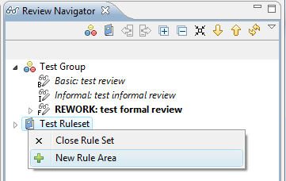
This opens the New Rule Area dialog.

Rule Areas contain Rule Violation. A Rule Violation is a logical grouping and Design Rules. They refer to a specific problem highlighted by the Rule e.g. Syntax Error, Bad Naming Convention etc.
To create a New Rule Violation, right-click on the parent Rule Area and select the New Rule Violation command.
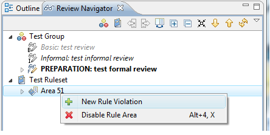
This opens the New Rule Violation dialog.

A Rule is the smallest unit in the Design Rule hierarchy. It refers to a specific code convention that is to be followed. The values of the rules are automatically set in anomalies that are created using the Rule as a reference. This can speed up and put some consistency in the review process.
To create a New Rule, right-click on the parent Rule Violation and select the New Rule command.
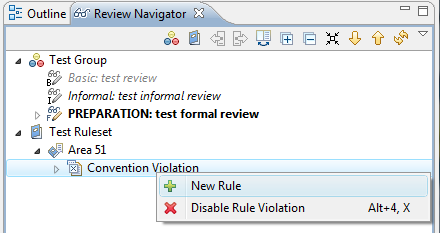
This opens the New Rule dialog.

Once the Navigator view is open and Review Items are present. The items can be reviewed. Files are reviewed using various editor views to browse the content. Currently R4E is fully integrated with the Java JDT and C/C++ CDT editors and will take advantage of the special features these editors provide.
Files can be open in editors by double-clicking on them or their children in the Review Navigator. By default, files belonging to resource review items will be open in single-file editors, whereas files belonging to commit review items will be open in a compare editor. If the file is open using the child Selection/Delta/Anomaly element, then the cursor will automatically be positioned to the start of the line range that corresponds to the element. Files and also be open in the single-file editor by using the Open File in Editor command from the selected element context menu.
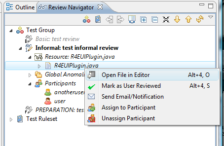
Once the file is open, anomalies can be added on the contents by selecting a range in the file and using the New Anomaly command in the R4E context menu.
When to Review Navigator is open, Selections, Deltas and Anomalies elements will be shown as annotations in the Editor window left ruler. The text area of the editor that correspond to the position range of the element will also be highlighted.
The icons show anomalies and associated comments, the icons show Deltas and the icons show Selection elements.
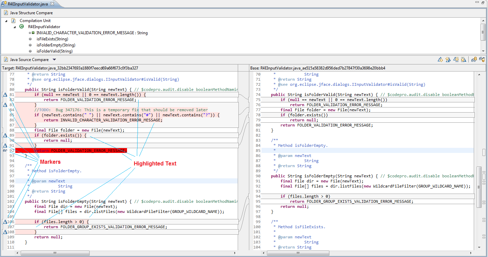
Additionally, the single editor will also show them as markers in the overview ruler on the right side.
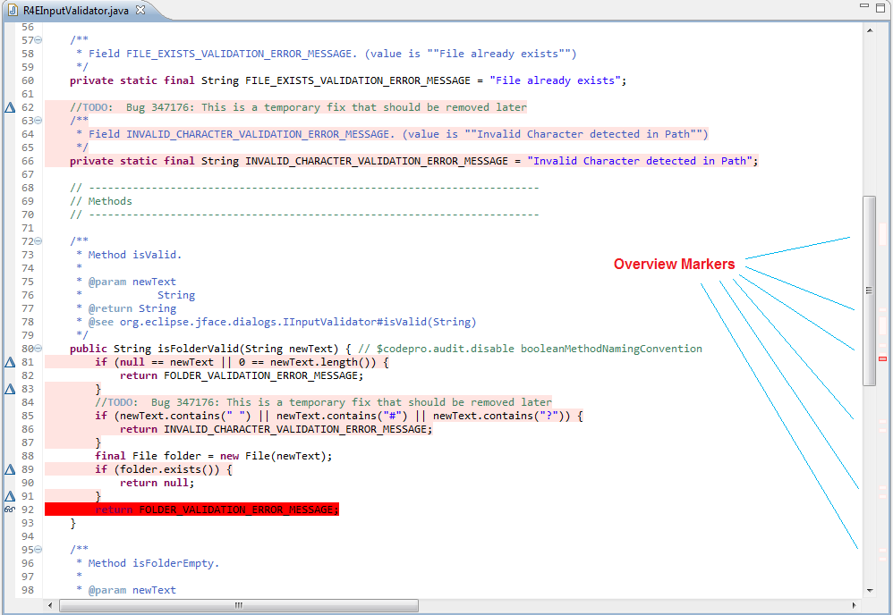
The appearance of the annotations (highlighting colors, widgets etc.) can be chaged by going to the Window->Preferences under the General->Editors->Text Editors->Annotations preferences page
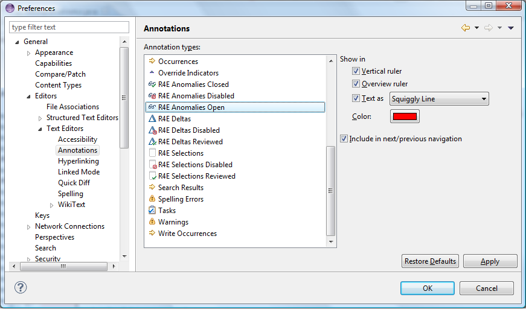
In the compare editor, it is possible to navigate through the R4E Annotations by using the Goto Next Anomaly and Goto Previous Anomaly commands
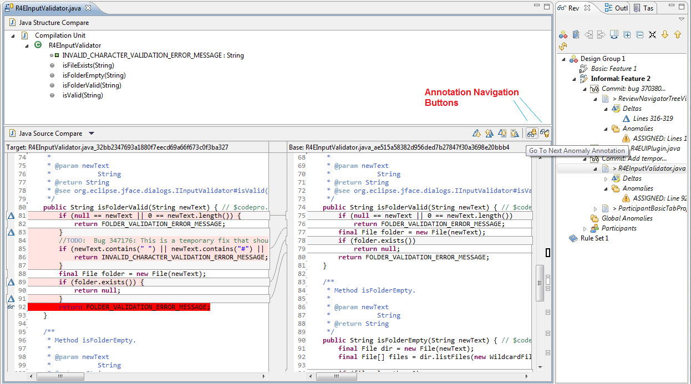
In the single editor, we use the normal annotation navigations command in the main R4E toolbar. It it possible to restrict navigation to go only through the R4E Annotation by removing the navigation to other annotation type as shown below

When hovering over the R4E annotation markers, information about the corresponding R4E element will be displayed in the hovering popup window. It is also possible to use contextual commands on the associated R4E element in the hovering window. This has the same effect as using contextual command on the element in the R4E Navigator.
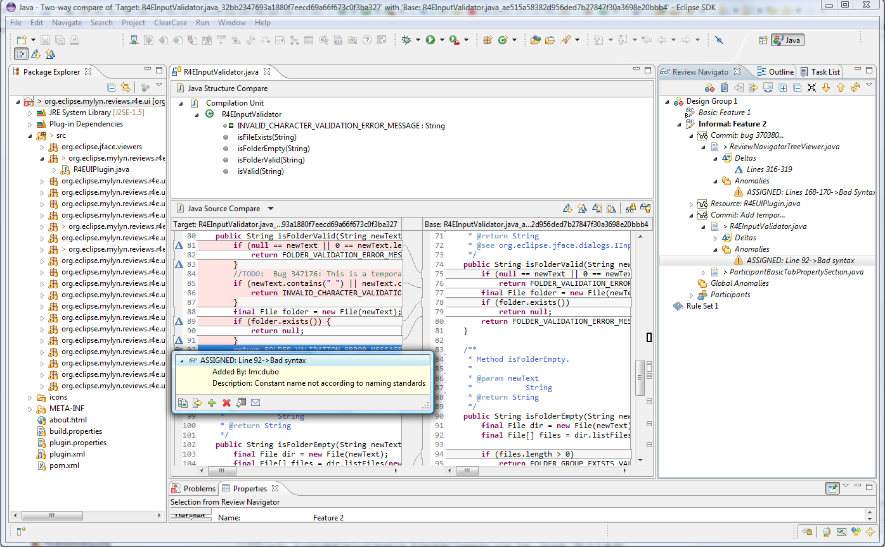
Annotations are a nice and effective tool to help in performing reviews without having to go outside of the editor window.
Updates to any review elements are performed via the R4E Properties View. The R4E Properties view uses the Generic Eclipse Properties View to display the R4E Properties and will show up when any Review Navigator element is selected to display the properties that are associated with this element.
The R4E Properties View is a tabbed properties view that consists of two tabs.
Editable properties can be changed directly in the properties view. Take note that some properties can only be set when the element is created, while others could be editable only under specific circumstances (e.g. a specific element state or review phase for Formal Reviews).
By default, the Properties view is linked with the Review Navigator. This means that if an element of the Review Navigator is selected, the Properties view will be activated and will show the element's properties. It is possible, to remove this link by toggling on and off the Link with Properties command, which is located in the Review Navigator View drop-down menu.
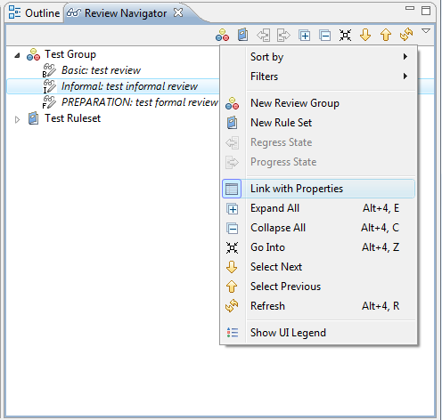
When the Review Navigator view in unlinked, the Properties view will not be started automatically upon element selection. To activate the Properties view and see the element's properties in this case, right-click on the element and use the Show Properties contextual command.

A more detailed description of the properties for each element is shown below.
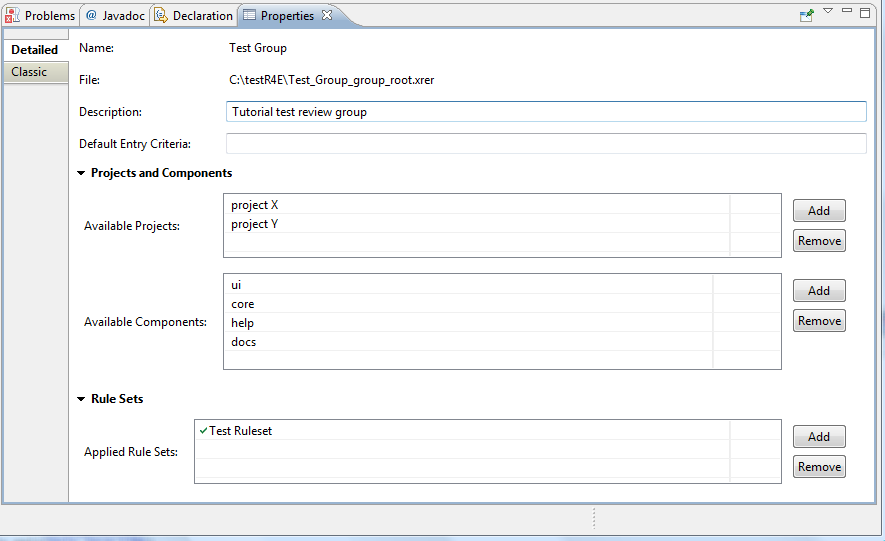
Properties for the Review Group Element includes:
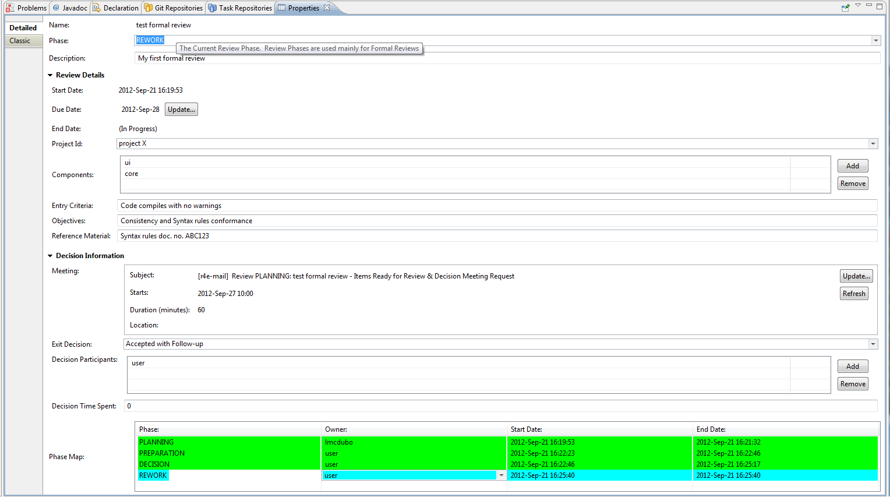
Properties for the Review Element includes:
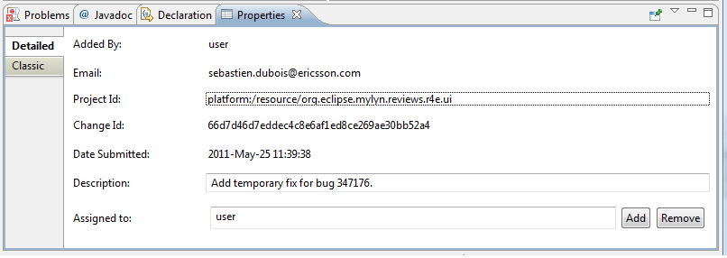
Properties for the Review Item Element includes:
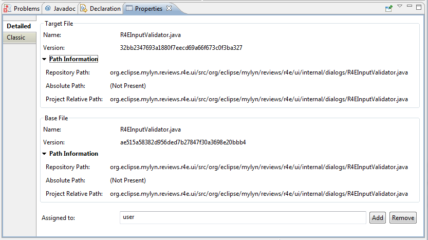
Properties for the File Context Element include a section for the base (predecessor) and target (current) files. Each section contains:

Properties for the Selection and Delta Elements include the Position (i.e. the line range) where the selection or delta is located within the parent file and the participants it is assigned to for review purposes.
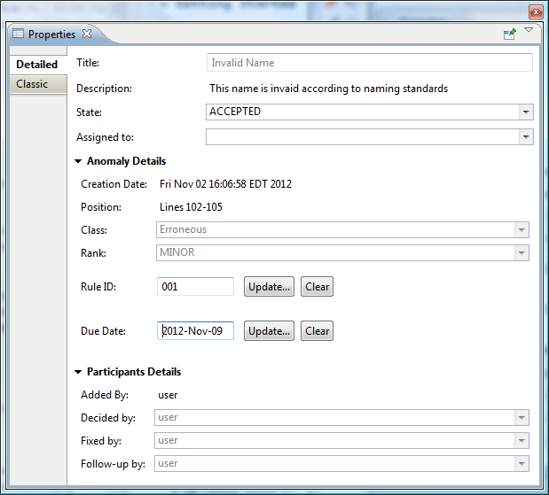
Properties for the Anomaly Element includes:

Properties for the Comment Element includes:

Properties for the Participant Element includes:

Properties for the Rule Set Element includes:

Properties for the Rule Are and Rule Violation Elements only include the name of the Area or Violation.

Properties for the Rule Element includes:
Eclipse allows you to customize your keyboard using General>Keys preference page. Within Eclipse, key strokes and key sequences are assigned to invoke a command.
R4E defines some keys as accelerator keys to help the user to perform reviews. Each command starts with ALT +4 as below:
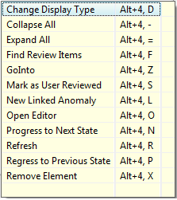
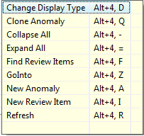
When selecting the accelerator key ALT + 4, if the user waits before selecting the next accelerator key, a commands list like the one shown above will be displayed at the bottom right corner of the Eclipse window.
The default Copy and Paste accelerators (CTRL+C, CTRL+V) are also available in the Review Navigator view to clone Anomalies and Comments.
R4E support sending Meeting and E-mail notifications directly from the Eclipse workbench. Notification send are pre-filled with all the relevant information, making it easy to have standardized communication between the Review participants.
Meeting notifications also can be used to schedule various meetings (e.g. decision meetings) automatically.
E-mail notification can be sent on Review Navigator elements by using the Send Email/Notification command from the selected element context menu.

Once the command is triggered, a dialog appears asking the kind of notification to be sent. Take note that not all the options are available depending on the element selected, the review type and other factors.

Selecting one option and closing the dialog will show up a simple email client pre-filled with all the relevant information. The user is free to modify the information as he sees fit and send the email by clicking the ''OK ''button.
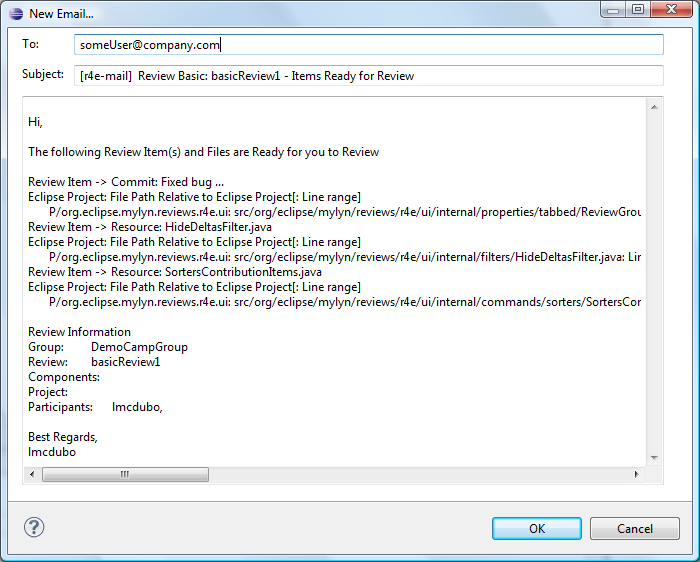
Meeting can also be scheduled directly in the workbench using R4E. Meeting data generated is in a VCalendar format that is attached to the Email that will be sent. Meeting data for decision meeting is mandatory for Formal Reviews and optional for other review types.
To add meeting data, use the ''Update ''button in the Extra property tab, under the Decision Information section, for the selected Review element. This will open the Meeting Information dialog.

The meeting information to enter include the time of the meeting, the duration and location where the meeting will take place. To make the time entry easier, you can use the date selector button (the "..." button on the right side of the Starts text field).

The meeting info stored in the system can be retrieved at all times by using the ''Refresh ''button in the Extra property tab, under the Decision Information section, for the selected Review element.
Statistical reports provide useful information to analyze the efficiency of one or several reviews. To have this functionality available, you need to install the report feature on top of the R4E feature.
To generate a statistical report, select in the Review Navigator view one or more review, the right click and select "Generate Report"
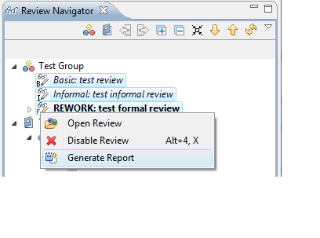
Two types of report can be generated.
The report folder is located under the group folder. The group folder is specified in the R4E Preferences,
If the user is not allowed to create a report in the existing group report directory, a new pop-up allows the user to select or to create a new directory to save the requested report. The user can enter a path or select the Browse button to select a location where to store the report.

When the report generation is completed, a pop-up window will indicate where the report was stored.

Once the OK button is clicked, the HTML report will be displayed in the default web browser or in the Eclipse web browser depending on the Eclipse web browsing preferences.
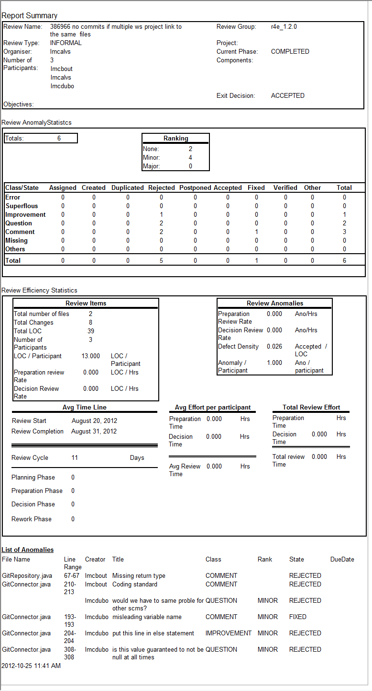
This section lists the reviews that were selected for the report. The review name, group, component, review item type, review type and project information are displayed for each review. The total number of reviews is also displayed at the bottom of this section when more than one review was selected.
This section provides the following anomaly counts.
This section provides several interesting review efficiency statistics divided in the following groups.
This section is only available for the inspection record. The list of anomalies raised during the review with the following information: File Name, line range, tile of the anomaly, class, ranking and the due date.
In R4E, basic reviews are the simplest form of reviews available. Basic reviews are stateless and the anomalies that are raised are also stateless. This means the participants must track progress of the Review and of the raised Anomaly externally.
Typically, the workflow of a basic review will go as follows:
Informal Review workflow is pretty much the same as the Basic Review workflow, so the steps described above still apply. However, the main difference is the fact that anomalies are now stateful and they need to be addressed/resolved before the review can be closed.
The state diagram for the anomaly workflow is as follows:

Once all the Anomalies are in a terminal state, the review can then be closed as it is done for Basic Reviews.
Formal Review follow the IEEE 1028-1997 standard. They are stateful and divided into Review Phases. As in Informal Reviews, anomalies created are also stateful.
The state diagram for Formal review workflow is as follows:

The Planning phase is the active phase when the review is initially created. In this phase, the Review Organizer and/or Lead adds the contents that is to be reviewed, either manually or by selecting items from the Version Control System and adds participant that will be part of the review. Optionally, review elements are assigned to specific participants. At the end of this phase, a notification is sent to the participant that the items are ready to be reviewed, and an invitation to a decision meeting set-up by the Organizer/Lead. Once this phase is completed, it is impossible to go back to it.
The Preparation phase is the phase where participants review the items included in the review and potentially raise anomalies. Once all reviewers have completed their tasks (and notified the Organizer/Lead), then the review can progress to the next phase.
The Decision phase is where all the anomalies that were logged are analyzed and a decision is made on each of them on how to handle them. Potential outcomes include fixing the problem flagged by the anomaly, deferring it, or rejecting it if it is not valid. Once all the Anomalies are examined, a decision can be taken on how to close the review. The possible outcomes for the review at this stage is that it could be rejected and more reviewing/rework is necessary, it could be accepted as is, or it could be conditionally accepted, provided that the outstanding anomalies are fixed.
The Rework phase is an optional phase, only used when a review is conditionally accepted, in which valid anomalies are fixed. Once the fixed are included, the anomalies will need to be re-checked to verify that the fixes are acceptable. When all the fixes are verified, the Review can be completed.
Take note that there is a slight difference between the anomaly states in Informal Reviews and the ones used in Formal Reviews, as it can be seen below:

A new Anomaly in a Formal Review is set to
CREATED ''by default. During the decision phase, it could be set to the same values as in Informal Reviews, and it can also be set to ''ACCEPTED, which means that the anomaly is deemed valid and will be handled and fixed. There is no ''ASSIGNED ''state for Anomalies in Formal Reviews. The rest of the anomaly flow is essentially the same as with Informal Reviews.
|
|

|
|
| Concepts | Advanced Topics |